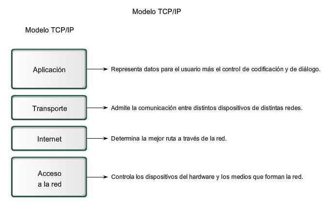

Modelo de Internet de cuatro capas
[1]
Las cuatro capas del modelo TCP/IP son [2]:
- La capa de aplicación. Esta capa combina las capas de aplicación, presentación y sesión del modelo OSI. La capa de aplicación proporciona protocolos específicos de la aplicación para servicios como la navegación web (HTTP), el correo electrónico (SMTP) y las transferencias de archivos (FTP). Los servicios DNS también operan en la capa de aplicación.
- La capa de transporte. Esta capa se corresponde con la capa de transporte del modelo OSI y gestiona los servicios de comunicación, incluida la transmisión fiable a través del protocolo de control de transmisión (TCP) o la entrega de datagramas sin conexión a través del protocolo de datagramas de usuario (UDP).
- La capa de Internet. Esta capa es equivalente a la capa de red en el modelo OSI y es responsable del direccionamiento, el enrutamiento y la gestión de la fragmentación de los paquetes IP. Además del protocolo de Internet (IP), ARP, IGMP e ICMP también operan en esta capa.
- La capa de acceso a la red. Esta capa se correlaciona con las capas física y de enlace de datos del modelo OSI y se encarga de la transmisión de datagramas de red a través de redes físicas específicas.